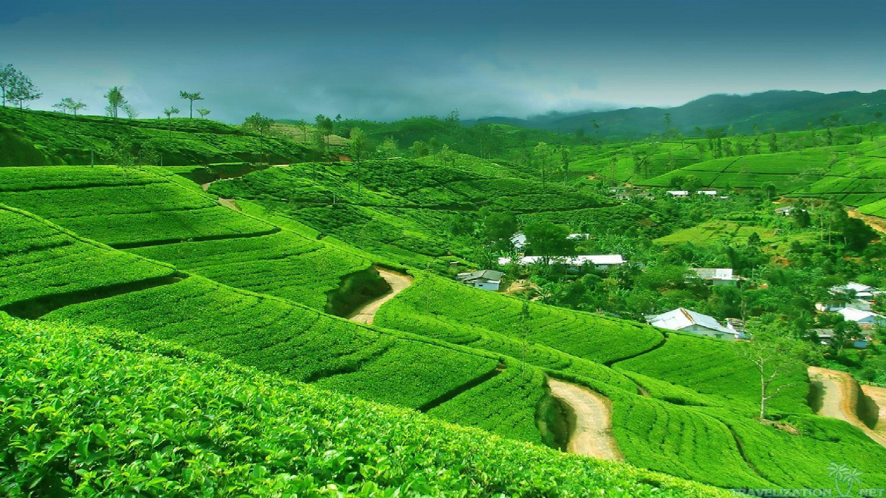

When it comes to exploring and sightseeing in Sri Lanka, it offers us a plenty of options. There are many beautiful places in Sri Lanka, all unique in their own wonderful capacities.Cool right?
These are the 12 best places to visit in Sri-Lanka!
1.SIGIRIYA ROCK
 Declared as a world heritage site by UNESCO, Sigiriya serves as a fine example of ancient urban planning. Sigiriya is a significant site of the Cultural Triangle and perhaps Sri Lanka's most iconic historical destination. The site, also known as Lion Rock, is recognized all over the world for the remains of the ancient Sigiriya Rock Fortress and its numerous enchanting and well-preserved attractions. The complex hydraulics system at the fortress enhances the site's reputation as a beautiful place in Sri Lanka.
Declared as a world heritage site by UNESCO, Sigiriya serves as a fine example of ancient urban planning. Sigiriya is a significant site of the Cultural Triangle and perhaps Sri Lanka's most iconic historical destination. The site, also known as Lion Rock, is recognized all over the world for the remains of the ancient Sigiriya Rock Fortress and its numerous enchanting and well-preserved attractions. The complex hydraulics system at the fortress enhances the site's reputation as a beautiful place in Sri Lanka.
2.Nine-Arch Bridge
Nine Arch Bridge is also called the Bridge in the sky and is among the iconic Sri Lanka tourism places. It is in the small mountain town of Ella and offers visitors with splendid view of the surrounding area which comprises of lush greenery and tea fields. What makes the bridge unique is that it is made up of stone, brick and cement. There is no use of any steel. It is one of the best places to visit in Sri Lanka for a memorable holiday.3.Arugam Bay
 The Sri Lankan coastal town of Arugam Bay lies on the Indian Ocean,with several surfing spots scattered across the area, for both beginners as well as skilled surfers, Arugam Bay is often called a surfer's paradise. The famous surfing points here are Main Point and Whiskey Point, with surfboard rentals in their proximity. If you're a non-surfer, one can relax on the beaches at this beautiful place in Sri Lanka. At night, the beaches play host to many beach parties, offering a chance to soak in the lively atmosphere.
The Sri Lankan coastal town of Arugam Bay lies on the Indian Ocean,with several surfing spots scattered across the area, for both beginners as well as skilled surfers, Arugam Bay is often called a surfer's paradise. The famous surfing points here are Main Point and Whiskey Point, with surfboard rentals in their proximity. If you're a non-surfer, one can relax on the beaches at this beautiful place in Sri Lanka. At night, the beaches play host to many beach parties, offering a chance to soak in the lively atmosphere.
4.Royal Botanical Garden
 The Royal Botanical Gardens are situated 5 km west of Kandy. The most prominent gardens in Sri Lanka, Royal Botanical Gardens have colourful orchids, pleasant winds and tall trees. It is a 147 acre - natural elegance holding landscaped gardens and scenic beauty, making it a photographers dream.
The Royal Botanical Gardens are situated 5 km west of Kandy. The most prominent gardens in Sri Lanka, Royal Botanical Gardens have colourful orchids, pleasant winds and tall trees. It is a 147 acre - natural elegance holding landscaped gardens and scenic beauty, making it a photographers dream.
5.Hatton Tea Plantations
 The tea plantations in the ever-buzzing town of Hatton are one of the highlights of Sri Lanka. The estates are at 4000 feet above sea level where the climate and scenery combined with colonial-era architecture that is evident in the old tea plantations are sure to instil a sense of awe and wholesomeness.4.Temple of Tooth-Kandy
Sri Dalada Maligawa is the Sinhalese name for this holy shrine. Famously called Temple of the Sacred Tooth Relic, it is touted to be the most sacred Buddhist temple in the whole world. It houses the tooth of Buddha nestled in a golden chamber and is within the premises of the royal palace complex (formerly a princely state).5.Galle Fort
The port city of Galle is one of the most beautiful places in Sri Lanka and is situated along the southwestern coast of Sri Lanka. Primarily known for the famous Galle Fort, a UNESCO World Heritage Site, the city has played a significant role in the country's lengthy colonial history.6.Minneriya National Park
 The Minneriya National Park is in the Northern province of Sri Lanka.The national park is famous for its herds of elephants migrating for food, water and shelter, and forming a 'gathering' that can be witnessed by the visitors. The dry season is the best time to visit this beautiful place in Sri Lanka, as the majestic elephants migrate to the Minneriya Tank for water.
The Minneriya National Park is in the Northern province of Sri Lanka.The national park is famous for its herds of elephants migrating for food, water and shelter, and forming a 'gathering' that can be witnessed by the visitors. The dry season is the best time to visit this beautiful place in Sri Lanka, as the majestic elephants migrate to the Minneriya Tank for water.
9.Polannaruwa ruins
Polonnaruwa, a marvel of a place, is in Northern Sri Lanka. This beautiful place in Sri Lanka once served as the capital of the Kingdom of Polonnaruwa under the Chola Empire in the 10th century. This makes it the second most historic kingdom in Sri Lanka after Anuradhapura.7.Dunhinda Falls
 Known for its smoky-looking misty spray, “Dun in Sinhala” means mist or smoke. It is also known as bridal falls for the mist's resemblance to a bridal veil. There are also a few legends behind Dunhinda Falls. One tells of a fish wearing a golden earring that swims over the treasure of the Prince of Uva. With guards protecting this treasure below the water, it is said they seek human sacrifice. So, if you are one to believe these old legends, maybe do not swim in the pools! Another legend describes a princess and her commoner lover. In their final act against separation by the disapproving Gampola King, they hurled themselves from the highest ledge of the falls.
Known for its smoky-looking misty spray, “Dun in Sinhala” means mist or smoke. It is also known as bridal falls for the mist's resemblance to a bridal veil. There are also a few legends behind Dunhinda Falls. One tells of a fish wearing a golden earring that swims over the treasure of the Prince of Uva. With guards protecting this treasure below the water, it is said they seek human sacrifice. So, if you are one to believe these old legends, maybe do not swim in the pools! Another legend describes a princess and her commoner lover. In their final act against separation by the disapproving Gampola King, they hurled themselves from the highest ledge of the falls.